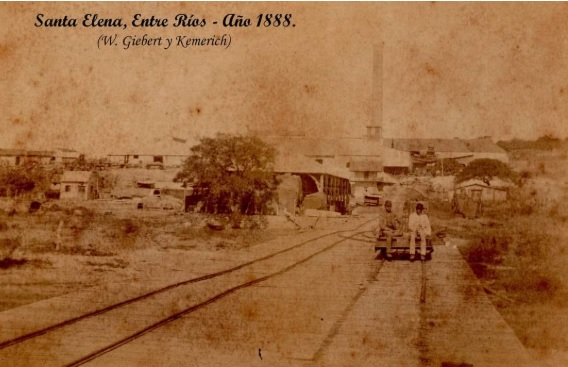
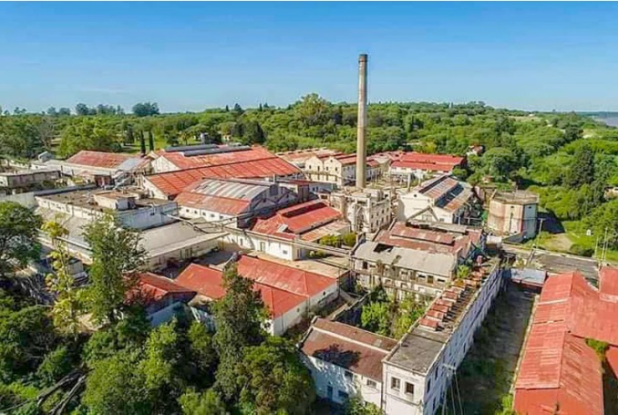

Los comienzos

Santa Elena está ubicada al norte de la provincia de Entre Ríos, sobre las barrancas del río Paraná. Desde sus orígenes fue un punto estratégico por su cercanía al río, favoreciendo el intercambio comercial y el desarrollo de actividades productivas.
Con el paso del tiempo comenzaron a instalarse familias y pequeños emprendimientos, dando origen a una comunidad que fue creciendo de manera sostenida.
El Frigorífico Santa Elena

Uno de los momentos más importantes en la historia de la ciudad fue la instalación del histórico Frigorífico Santa Elena, que impulsó el crecimiento económico y generó empleo para cientos de familias.
Durante muchos años representó el motor económico de la ciudad, convirtiéndose en un símbolo del desarrollo local.
Este video muestra la historia del Frigorífico Santa Elena, un lugar emblemático que impulsó el crecimiento de la ciudad y marcó la vida de muchas generaciones de trabajadores y familias.